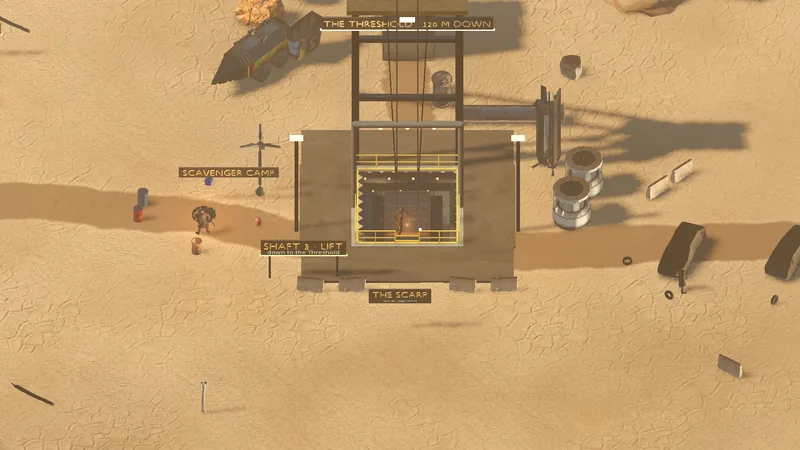

Wilds · Surface
The Scarp
Overview
Open sky over the Outpost: a basin of cracked mud and hoodoos with a scavenger camp. The shaft in its crater drops to The Threshold.


Your first journey · step 3/6First daylight. Scavengers hold the camp; the old road leaves through the north-east canyon.
Exits & connections
| To | Kind | Exit sign | Edge | Bike | Status |
|---|---|---|---|---|---|
| The Saltpan | Road | NE CANYON · THE SALTPAN | NE | Ride through | Playable now |
| The Saltpan | Road · tunnel | SW CANYON · THE SALTPAN | SW | Ride through | Playable now |
| The Sump | Road | EAST TRAIL · THE SUMP | NE | — | Planned |
| The Outpost | Elevator · Shaft 3 elevator | SHAFT 3 ELEVATOR · THE SCARP | DOWN | Ride through | Playable now |
| The Threshold | Elevator · Shaft 3 elevator | SHAFT 3 ELEVATOR · THE SCARP | DOWN | Ride through | Playable now |
Creatures
2 creatures at once when everything is up.
| Creature | Count | Respawn | XP | HP |
|---|---|---|---|---|
| 2 | Fixed placement | 35 | 30 |
Drill sites
Hold F at a site with a drill in your tool slot: Big Daddy Drill.
| Material | Sites | Yield |
|---|---|---|
| Limonite Seam | 1 | Bog Limonite ×2 |
Loose finds
Signs you will read
THE SCARPopen sky · edges lead onSCAVENGER CAMPTO THE SALTPANTO THE SALTPANSHAFT 3 · ELEVATORoutpost · thresholdTHE THRESHOLD · 120 m DOWN
Mentioned by
See also
The Saltpan · The Sump · The Outpost · The Threshold · Zones · World map